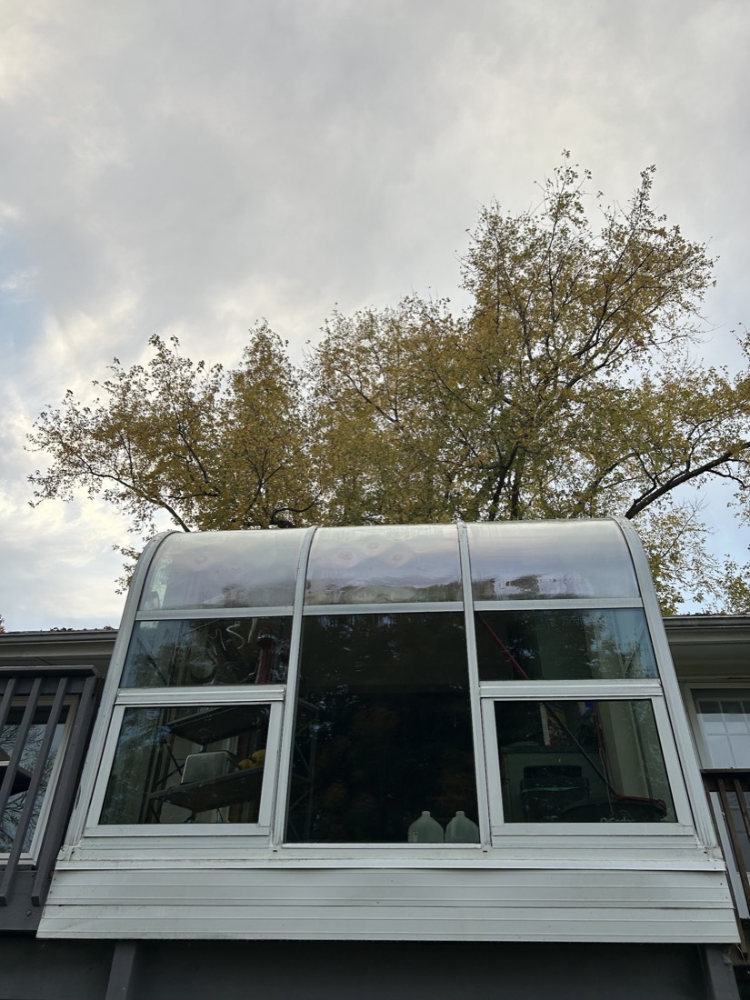
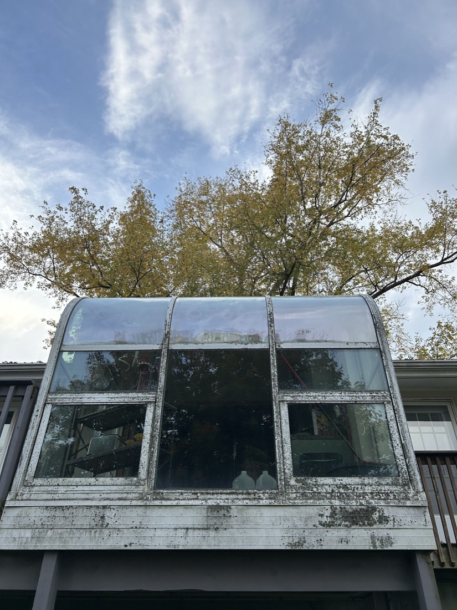
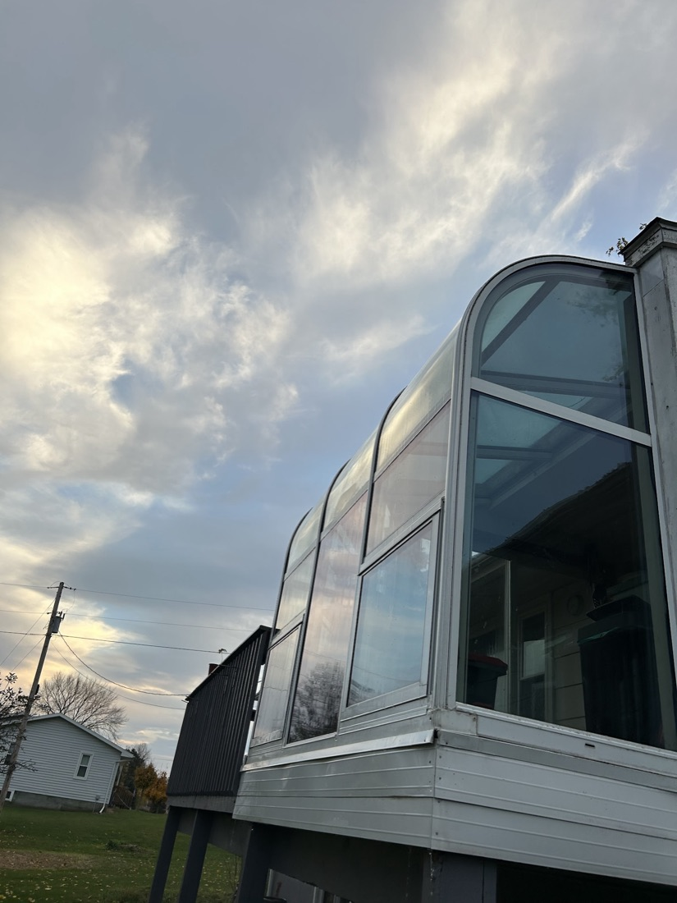
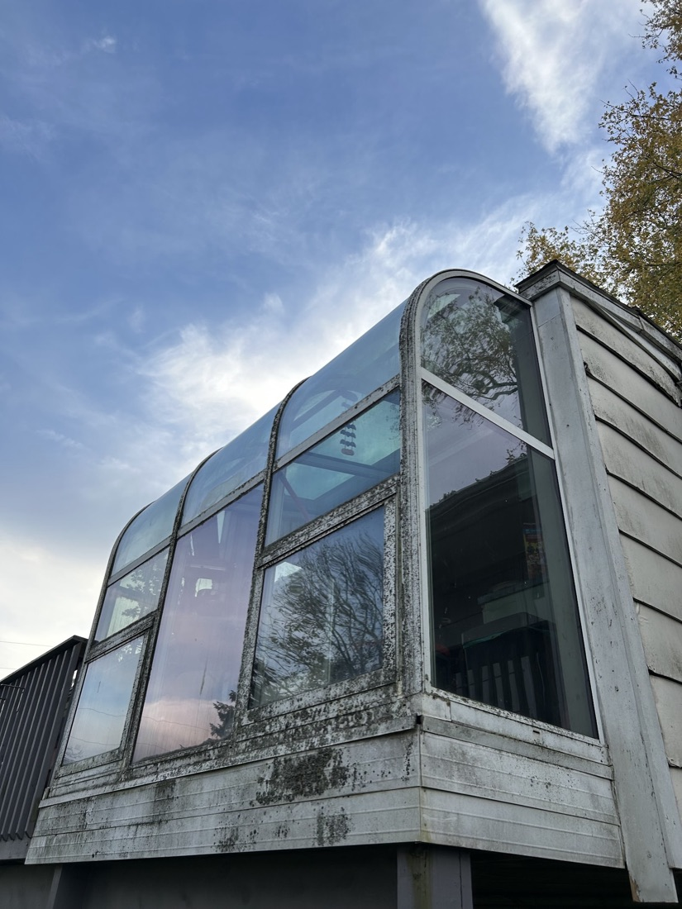

Siding, driveways, decks, patios, sunrooms and roofs. We use the right pressure for every surface, so things come out clean without getting damaged.

Low-pressure wash that lifts dirt, green algae and mildew off vinyl, wood and brick.
Concrete cleaning that knocks out grime, tire marks and buildup.
Bring wood and composite back to its natural color before you stain or seal.
Brick, stone and pavers cleaned up like new.
Glass, frames and trim cleaned so you can see out again. (See our before & after below.)
Storefronts, walkways, dumpster pads and building exteriors.
A sunroom we cleaned this fall. Green algae and grime off the glass, frames and trim.

BeforeAfterSunroom front


BeforeAfterSunroom side
Tell us what you need. A photo gets you a price fastest.
Straight pricing up front. No pressure, no surprises.
We show up, do it right and leave the place clean.
It depends on the size of the house or surface and how dirty it is. Every job gets a free, no-pressure quote. Call or text (517) 386-0664 with a photo and we can usually give you a ballpark the same day.
Pressure washing uses high-pressure water for hard surfaces like concrete. Soft washing uses low pressure and a cleaning solution for siding, roofs and other surfaces that high pressure could damage. We pick the right method for each surface.
Not when it is done right. We soft wash siding and use lower pressure on wood, so you get a deep clean without gouging, etching or forcing water behind your siding.
Late spring through fall is ideal, once temperatures stay above freezing. Spring washes clear off winter grime and pollen. Fall washes get mildew off before it sits all winter.
Most Michigan homes look best with a house wash every 1 to 2 years. Homes in shade or near trees and water may need it yearly because of green algae and mildew.
No. We just need access to an outdoor water spigot and the areas being cleaned. Close your windows and we will take it from there.
Yes. We clean sunroom glass, frames and trim. Check out the before and after photos on this page from a recent sunroom job.
Overgrown branches over the roof, limbs hanging on the power drop, or a mess after a storm? We trim, clean up and haul it away.
Learn more →🛠️Fence & Porch RepairLeaning fence, sagging gate, soft porch boards or a wobbly railing? We fix it right so you do not have to keep patching it.
Learn more →Locally owned in Eaton Rapids. See photos, directions and reviews on our Google profile. Already a customer? We'd love a quick review.
Don't see your town? Call or text and ask. We go where the work is.
Call or text (517) 386-0664. Sending a photo is the fastest way to get a price. Or fill out the form and we'll get right back to you.